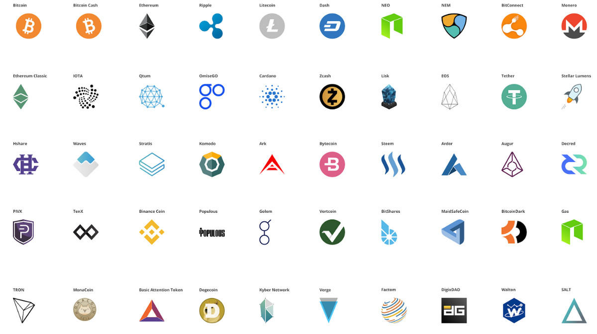

-
faceAbout MeCurrent Computer Science student with real-world experience in software engineering and several internships and project experience. A motivated young professional with an aptitude for innovation and creative problem-solving. Communicative and personable, will learn and adapt quickly, follow direction, think outside of the box, and serve internal and external customers with self-confidence and professionalism. Have experience in Python, Java, HTML, CSS, PHP, C++, C, SQL, and more. I’m interested in both front and back end software development with a slight preference for back end. I have lots of experience building websites and applications in a professional setting. I’m a hard worker, I’m persistent, creative and passionate. In a co-op/internship, I’m looking for a company with a strong community where I can work as a team member to either help build a product that clients or customers will use or develop an underlying tool that helps protect or improve the company.
-
schoolEducation
- Northeastern University: Boston, MA
- College of Computer and Information Science
- Candidate for Bachelor of Science in Computer Science, expected. 2020
-
menuExperience
-
VMwareSpring 2019Software Engineer
- • Will be working on the VCloud Director
-
 Cisco SystemsSummer 2018Software Engineer
Cisco SystemsSummer 2018Software Engineer- • Worked with Angular.js, Node.js, and Java (Spring) to improve both back end processes and front end navigation in the Cisco Defense Orchestrator (software solution to security policy management).
- • Weekly demos to CDO team
- • Complete integration into scrum team
- • Contributed to a major front end navigation milestone that directly impacted CDO’s users
-
 Bank of New YorkSpring 2018Software Engineer
Bank of New YorkSpring 2018Software Engineer- • Using python, developed a command line ETL process between our Apache Phoenix database and Elasticsearch database that easily transferred over 100 million records in an efficient and optimized manner. Used DBeaver as a way to monitor the process.
- • Maintained spool queries in charge of the transfer of data from multiple legacy databases to our Hadoop cluster.
- • Actively engaged in best Agile Development practices and saw, first hand, how quickly the process allows for the development of a valuable minimum viable product.
- • Worked as a fully functional scrum team member and pushed code into what will eventually reach production.
- • Leveraged docker as a means of both running tests on local elasticsearch, fluentd, and kibana instances and contributing to our microservice infrastructure.
- • In charge of developing the continuous integration / continuous deployment pipeline for Python. Currently working with Linkedin’s Pygradle, Jenkins, Bitbucket, and Docker to automatically build/handle dependencies, develop standard e2e tests, and finally publish the repository to our remote artifactory.
-
 Inference SolutionsSummer 2017Software Engineer
Inference SolutionsSummer 2017Software Engineer- • Tested Software UI and identified bugs
- • Developed Alexa Skill in Python for company software (Studio Skill)
- • Built website in HTML, CSS and PHP that visualized client IVR usage statistics (Studio Statistics)
- • Decreased website loading times by 4-5 seconds in utilizing a standard MVC architecture and by applying dynamic programming fundamentals to the algorithms in charge of aggregating and interpreting data.
- • Communicated directly with the senior software developer (remotely), CMO, and CEO
- • Hosted Alex skill on AWS Lambda that communicated with Inference’s API to initialize, manage, and create interactive voice response campaigns.
-
 Architect Partners LLCSpring 2016Intern
Architect Partners LLCSpring 2016Intern- • Optimized Salesforce contact upload process
- • Analyzed tech sector for prospective clients
-
• Maintained content on company website in WordPress after every
relevant
merger
and
acquisition.
• M&A Alert: Salesforce Acquires Demandware
• Vista Equity Partners Acquires Marketo
-
-
codeSkills
-
Languages: Python, Java, HTML, CSS, PHP, C++, Golang, C, Javascript
-
Web: Flask, Node, Angular 1, React, Bootstrap, Materialize, Jinja2
-
Database: MySQL, MongoDB, Firebase DB, Elasticsearch, Hadoop
-
Cloud Services: Heroku, AWS Lambda
-
Software: Eclipse, JetBrains IDEs (IntelliJ IDEA, GitHub, PyCharm, CLion, PHPStorm, WebStorm)
MySQL Workbench, Microsoft Office, Ableton Live, DBeaver
-
-
motorcycleInterests
I enjoy rock climbing, mountaineering, dirt biking, and hiking. I've also recently started producing music with a software called Ableton. At Northeastern, I'm a part of the outdoor's club (NUHOC), ski club (NU Downhillers), and the rock climbing club. I'm hoping to get into mountain biking if I have the time. My dream is to one day climb Denali. Less on the recreational side, I'm interested in distributed ledger technology, virtual reality, trading, augmented reality, and entrepreneurship.
-
cloud
Ecclesia
A crowd sourced lobbying, political mobile/web application.
Projects -
cloud
R Top
A basic subreddit re-styler.
Projects -
cloud
Personal Logger
A basic command line logger for mental and physical health
Projects -
cloud
Crypto Alpha
Identify High Potential Cryptocurrency Investments
Projects -
cloud

More on Github
Projects